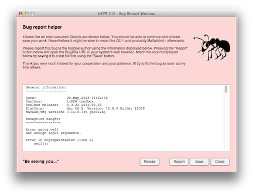

This software is still under development, and therefore you may encounter bugs rather frequent. To help improve its usability, reports of such encounters are highly welcome.
There is a BugZilla instance for the trEPR toolbox available online. All you need to do is to create a login and then report and/or search through the bugs for the toolbox. The BugZilla instance can be found online:
Please note: Never include actual data in your bug report, although the bug tracking software (BugZilla) allows you to attach arbitrary data to a bug report. The simple reason: Everybody can create an account with that BugZilla instance, and everybody with an account can see your data. Therefore: If you feel the need to provide me with some data to reproduce the bug, get in touch with me directly.
A bug report helper has been added that displays a window in case the GUI detects an internal error (exception). This window contains all the necessary information that shall go into an email to the toolbox author.

Figure 1: The bug report helper window of the trEPR toolbox. This window provides all necessary information for filing a useful bug report, including the status messages from the GUI and a link to the bug reporter (the button
If this window shows up, simply follow the instructions, and please, SAVE your data immediately afterwards.
If you encounter an error/bug, but the bug report helper doesn't appear, please continue reading to find out how to file a bug report.
A more detailed account of this topic can be found on the website of the trEPR toolbox. Simply press the "Website" button above or "About" for the URL and contact details of the toolbox author.
The better a bug report the faster (hopefully) the fixing of the bug reported.
What to include into a bug report?
The contact details can be found either in the "About" window or at the toolbox website. Simply press the "Website" or "About" button (or the "F1" key) above for contact details of the toolbox author.
Every bug report makes this software better, as the bug will be fixed. Therefore, bug reports are highly welcome.
A big "Thank you" to all users (and therefore beta-testers) for their patience and encouragement. To see that a software gets used is probably the best motivation to continue developing and supporting it.